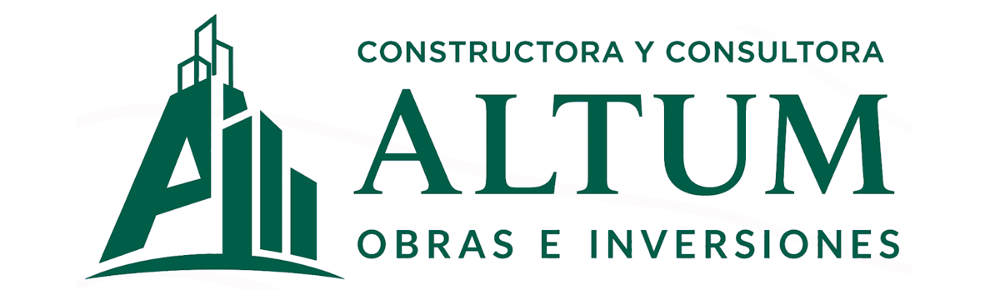

Constructora & Consultora Altum Obras e Inversiones

Qué ofrece
Acompaña a las organizaciones desde la formulación de una iniciativa de infraestructura o inversión hasta su ejecución y seguimiento.
- Estudios, proyectos y expedientes técnicos
- Consultoría, supervisión y ejecución de obras
- Control técnico, seguridad y gestión socioambiental